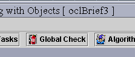
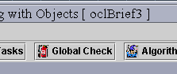
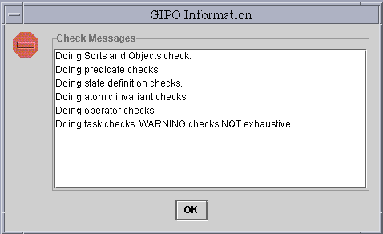

Generally, before use any tools under the "Tool" menu, it's recommended
to do a global check.
- 
Figure 1 Global Check
- Figure 2 Result Window of
Global Check
To Validate/Verify
In every editing window, there is a verify button for verifying syntax. Beside, there are also a function for global verification. Click on the button "Global Check" on the main toolbar (Figure 1).Generally, before use any tools under the "Tool" menu, it's recommended to do a global check.


Figure 1 Global Check
Figure 2 Result Window of Global Check
back to the tutorial main page